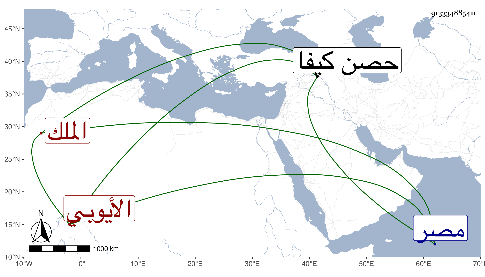

0902Sakhawi.DawLamic.ITO20230111-ara1.EIS1600.913334885411
Biography ID: 913334885411
734
خليل بن أحمد بن سليمان بن غازي بن محمد بن أبي بكر بن عبد الله ابن ثوران شاه الملك الصالح ثم الكامل أبو المكارم بن الأشرف أبي المحامد ابن العادل أبي المفاخر الأيوبي الماضي أبوه والآتي أخوه يحيى . استقر في مملكة حصن كيفا بعد قتل والده سنة ست وثلاثين ، وكان كما قال شيخنا على طريقته في محبة العلماء خصوصا الشافعية ، وسار في بلاده سيرة حسنة ونشر العدل . قال وله نظم ووصفه أيضا بأنه من أهل الفضل وأنه أرسل بديوان من شعره على عادة أبيه إلى الديار المصرية فقرضه له الأدباء ، ومن لطيف ما وقفت عليه مما كتب له قول الكمال بن البارزي :
أبحر الشعر إن غدت منك في قبضة اليد غير بدع فإنها للخليل بن أحمد قال شيخنا ، وقد انتقيت من الديوان المشار إليه قليلا ومنه :
| بانوا فأجروا عيوني | من بعدهم كالعيون |
| في حبهم مت عشقا | يا ليتهم قبلوني |
وانتقى من ديوانه غير ذلك ، وأظن أن شيخنا ممن قرضه ، واستمر في المملكة حتى وثب عليه ابنه فقتله صبرا في ربيع الأول سنة ست وخمسين ، ولقب بالعادل وفي ترجمته من كتابي التبر المسبوك من نظمه غير ذلك ، وكذا في ترجمة أبيه من سنة ست وثلاثين في أنباء شيخنا ما يمكن استفادته هنا .
